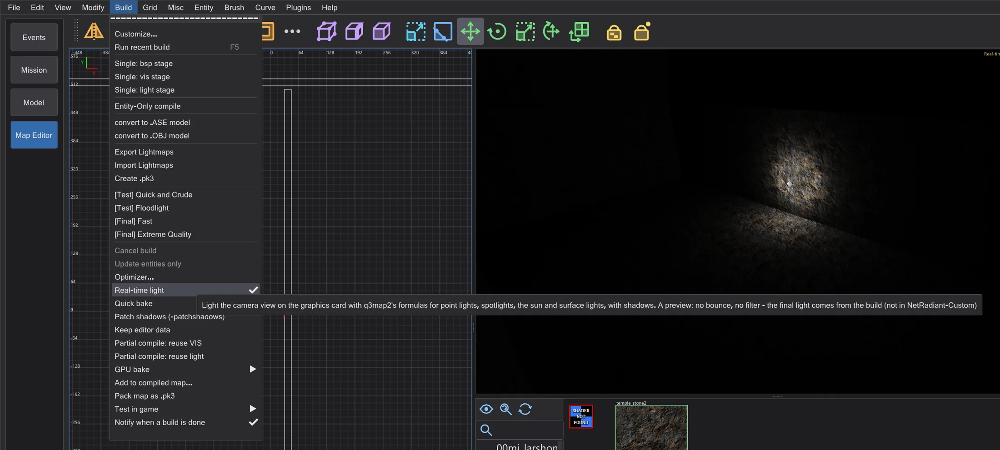
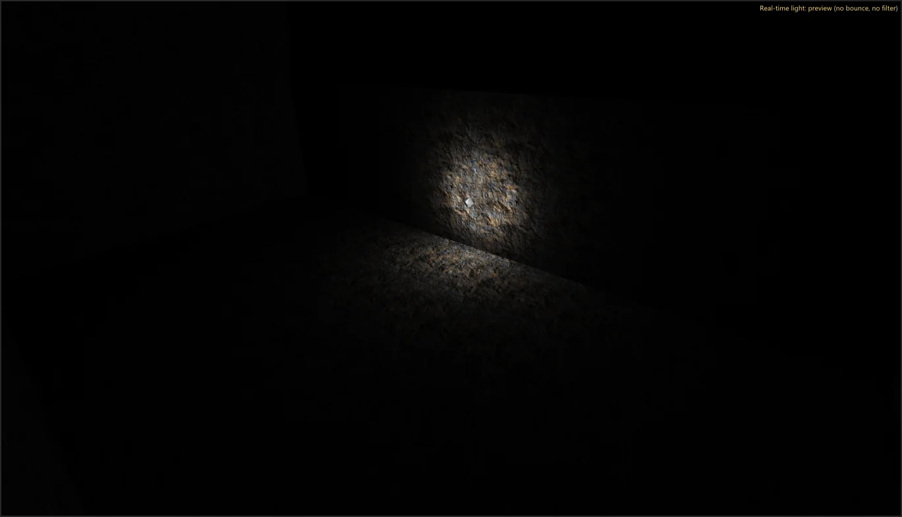
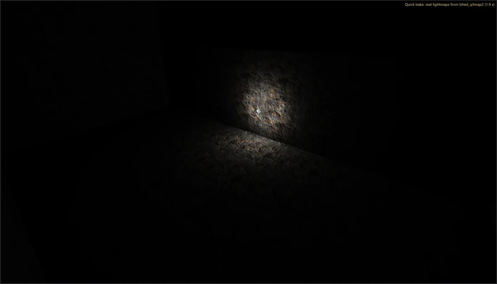

Map editor: speed and real-time light
See the light while you build: Real-time light lights the camera on the graphics card, Quick bake builds the map in the background and shows the real lightmaps. Building and editing got faster - with the same result as before.
Real-time light#

- 1
Switch on Build > Real-time light. The camera (render mode textured) is lit by the lights of the map - point lights, spotlights, the sun of the sky shader (
q3map_sun) and surface lights (q3map_surfacelight) - with the formulas of q3map2 -light and with shadows. - 2
Move a light or change its keys: the camera follows at once. Up to 64 lights light each frame (the strongest at the camera), 32 of them with shadow cubes.

Quick bake#
- 1
Switch on Build > Quick bake. Two seconds after the last change bhed_q3map2 builds the map in a temporary folder -
-meta,-vis -fast(when the map has no leak) and-light -fast- at low priority, so the editor stays smooth. - 2
When it is done, the camera shows the real lightmaps of this build; top right it says Quick bake: real lightmaps from bhed_q3map2 ( s). Any change cancels a running build and starts a new one after the pause. Your map and a .bsp next to it are not touched.

The quick bake writes the same lightmaps, light grid and visibility as bhed_q3map2 on the command line with the same switches - the self-test compares the files. It is faster than a full build because of -fast and the missing bounce passes; for the release build use the Build menu.
What got faster#
Every change was measured before and after (median of three runs, low priority, the same maps) and gives the same result: the .bsp of -bsp and -light is byte for byte the one of a 1-thread build of Stage 6, the saved maps are identical.
- -light uses all cores for the lightmaps (light by light in blocks, the adaptive supersampling predicted and checked exactly) and for the light grid.
- -bsp: the T-junction fix searches in parallel and applies in order; finding equal light grid points uses buckets instead of a search through all points.
- -vis stays as in NetRadiant-Custom: with several threads it may differ slightly from build to build, with
-threads 1it is always the same. Two ways to make it the same with several threads were tried and measured; both were slower. - Editor: invert selection, the selection test of the views and the NPC files of the optimizer (read in the background).
| Step | Map | NetRadiant-Custom | before (Stage 6) | now |
|---|---|---|---|---|
| BSP (all threads) | duel_pit | 0.20 s | 0.20 s | 0.20 s |
| VIS (all threads) | duel_pit | 0.15 s | 0.10 s | 0.10 s |
| LIGHT (all threads) | duel_pit | 0.66 s | 0.66 s | 0.61 s |
| BSP (1 thread) | duel_pit | 0.20 s | 0.20 s | 0.20 s |
| VIS (1 thread) | duel_pit | 0.15 s | 0.15 s | 0.15 s |
| LIGHT (1 thread) | duel_pit | 3.02 s | 3.33 s | 3.08 s |
| BSP (all threads) | mp__duel1 | 0.36 s | 0.31 s | 0.31 s |
| VIS (all threads) | mp__duel1 | 0.15 s | 0.11 s | 0.10 s |
| LIGHT (all threads) | mp__duel1 | 2.53 s | 2.99 s | 1.92 s |
| BSP (1 thread) | mp__duel1 | 0.35 s | 0.31 s | 0.31 s |
| VIS (1 thread) | mp__duel1 | 0.20 s | 0.15 s | 0.16 s |
| LIGHT (1 thread) | mp__duel1 | 8.72 s | 9.68 s | 9.63 s |
| BSP (all threads) | t1_inter | 0.31 s | 0.26 s | 0.26 s |
| VIS (all threads) | t1_inter | 0.15 s | 0.10 s | 0.10 s |
| LIGHT (all threads) | t1_inter | 0.31 s | 0.26 s | 0.31 s |
| BSP (1 thread) | t1_inter | 0.30 s | 0.25 s | 0.26 s |
| VIS (1 thread) | t1_inter | 0.15 s | 0.11 s | 0.10 s |
| LIGHT (1 thread) | t1_inter | 0.31 s | 0.31 s | 0.31 s |
| BSP (all threads) | md_ch_ben | 0.81 s | 0.71 s | 0.76 s |
| VIS (all threads) | md_ch_ben | 2.77 s | 2.27 s | 2.23 s |
| LIGHT (all threads) | md_ch_ben | 3.73 s | 4.24 s | 2.58 s |
| BSP (1 thread) | md_ch_ben | 0.86 s | 0.71 s | 0.71 s |
| VIS (1 thread) | md_ch_ben | 30.53 s | 24.90 s | 24.60 s |
| LIGHT (1 thread) | md_ch_ben | 12.66 s | 12.65 s | 12.76 s |
| BSP (all threads) | kejim_post | 4.74 s | 4.59 s | 4.14 s |
| VIS (all threads) | kejim_post | 745.40 s | 621.47 s | 573.70 s |
| LIGHT (all threads) | kejim_post | 9.18 s | 10.28 s | 7.21 s |
| BSP (all threads) | duel_mos_espa | 53.35 s | 44.86 s | 19.57 s |
| Step | Map | before (Stage 6) | now |
|---|---|---|---|
| Invert Selection (select all) | duel_mos_espa | 29.74 s | 5.2 ms |
| Invert Selection (select all) | kejim_post | 1.34 s | 0.7 ms |
| Invert Selection (select all) | md_am_sith | 1.36 s | 0.8 ms |
| Open .bsp (decompile) | duel_mos_espa | 7.71 s | 7.98 s |
| Open .bsp (decompile) | kejim_post | 2.01 s | 2.64 s |
| Open .bsp (decompile) | md_am_sith | 3.29 s | 3.42 s |
| Load .map | duel_mos_espa | 1.31 s | 1.29 s |
| Load .map | kejim_post | 662.5 ms | 717.4 ms |
| Load .map | md_am_sith | 805.6 ms | 827.7 ms |
| Textures loaded | duel_mos_espa | 1.64 s | 1.80 s |
| Textures loaded | kejim_post | 4.2 ms | 821.6 ms |
| Textures loaded | md_am_sith | 1.93 s | 2.16 s |
| Save .map | duel_mos_espa | 815.8 ms | 745.4 ms |
| Save .map | kejim_post | 142.5 ms | 173.7 ms |
| Save .map | md_am_sith | 175.9 ms | 189.6 ms |
| Move everything | duel_mos_espa | 285.1 ms | 329.4 ms |
| Move everything | kejim_post | 53.2 ms | 72.0 ms |
| Move everything | md_am_sith | 62.9 ms | 68.0 ms |
| Undo the move | duel_mos_espa | 294.1 ms | 353.0 ms |
| Undo the move | kejim_post | 26.2 ms | 36.4 ms |
| Undo the move | md_am_sith | 33.3 ms | 32.6 ms |
| Undo CSG Subtract | duel_mos_espa | 171.1 ms | 207.4 ms |
| Undo CSG Subtract | kejim_post | 8.6 ms | 7.9 ms |
| Undo CSG Subtract | md_am_sith | 12.1 ms | 10.1 ms |
| Optimizer start | duel_mos_espa | 48.6 ms | 39.2 ms |
| Optimizer start | kejim_post | 10.2 ms | 13.1 ms |
| Optimizer start | md_am_sith | 14.7 ms | 11.8 ms |
| Optimizer check | duel_mos_espa | 1.47 s | 1.34 s |
| Optimizer check | kejim_post | 162.4 ms | 201.8 ms |
| Optimizer check | md_am_sith | 303.7 ms | 257.4 ms |
| Switch to the map editor until the game data is ready | - | 273.3 ms | 258.1 ms |
| Preview: prepare the scene (md_am_sith) | - | 1.44 s | 1.40 s |
| Preview: frame time, scene (mean) | - | 15.0 ms | 15.0 ms |
| Preview: frame time, free flight (mean) | - | 8.2 ms | 8.1 ms |
kejim_post "Textures loaded" was so fast before only because Stage 6 loaded Jedi Outcast without its folders in this run (0 shaders, every face with the replacement image - the error fixed in Stage 7); now the 1187 shaders and their images are loaded. Steps that were not changed vary by about 20 % from run to run.